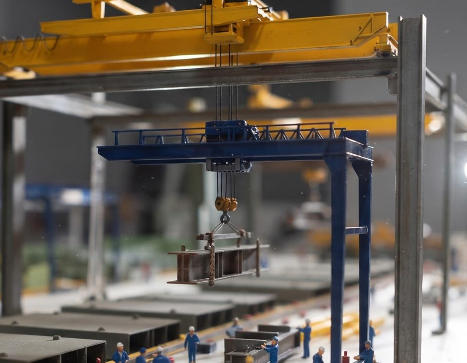
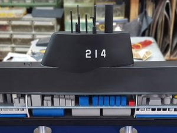
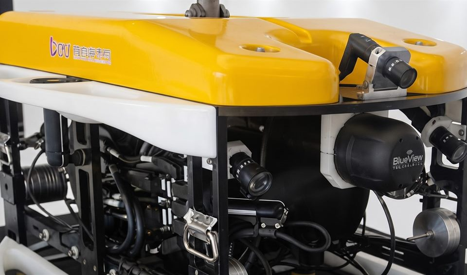
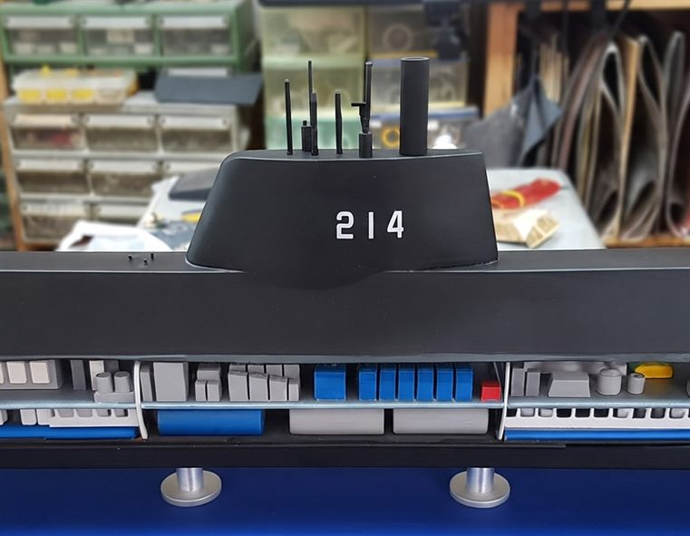
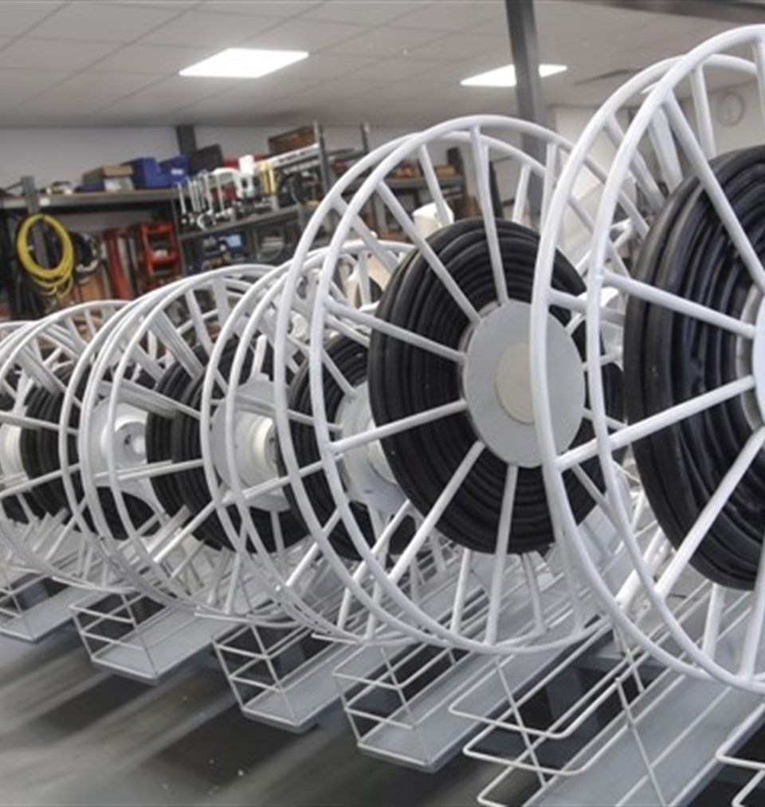
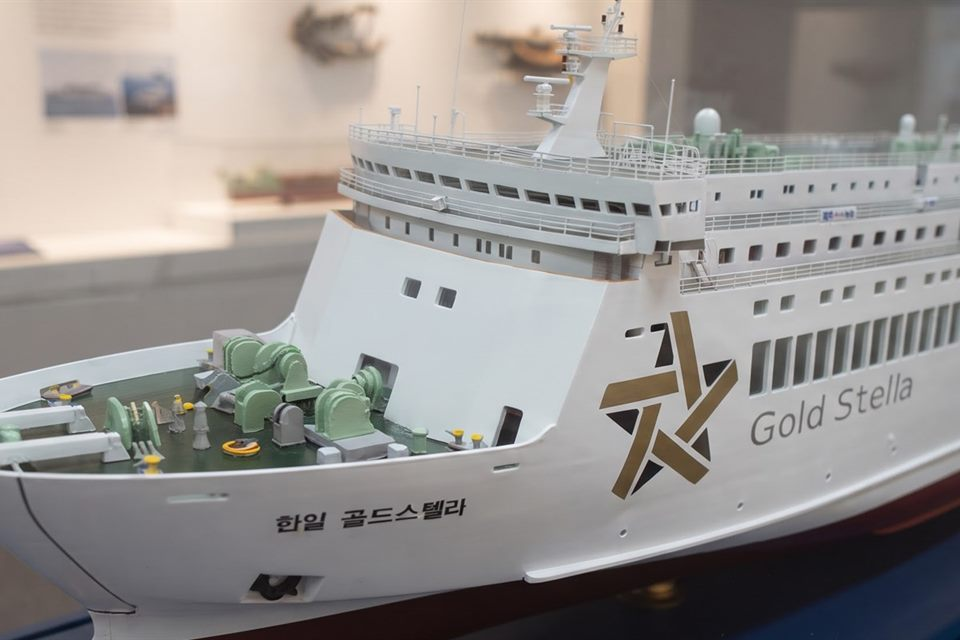
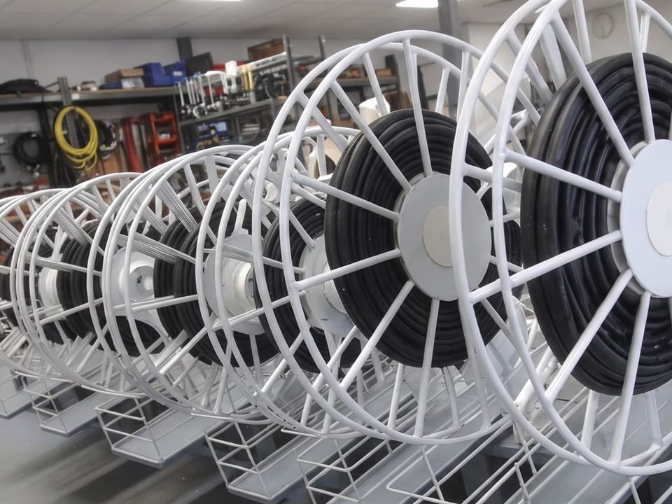

정밀 가공 · 시제품 · 소량 양산
도면 그대로,
공차 안에서.
알루미늄 · 스테인리스 · 티타늄을 밀링과 선반으로 가공하고,
3차원 측정기로 검사한 성적서를 함께 드립니다.
- 소재 알루미늄 · 스테인리스 · 티타늄 · 엔지니어링 플라스틱
- 가공 밀링 · 선반 · 와이어 방전 · 연삭
- 검사 3차원 측정 · 성적서 발행
- 납품 시제품 한 개부터 소량 양산까지
도면에 적힌 숫자를
그대로 만듭니다.
그래서 저희는 측정을 건너뛰지 않습니다.
다름정밀은 알루미늄과 스테인리스, 티타늄을 밀링 · 선반 · 와이어 방전으로 가공하는 정밀 가공 회사입니다. 시제품 한 개부터 소량 양산까지 맡습니다. 가공한 부품은 3차원 측정기로 재고 성적서를 붙여 보내며, 공차를 벗어난 것은 고객에게 가기 전에 저희가 먼저 걸러냅니다.


도면 검토부터 가공, 검사, 납품까지 한 사람이 맡아 도면의 의도가 중간에 사라지지 않습니다.
고장 난 설비 부품처럼 급한 일은 야간과 주말에도 가공해 다음 날 보내드립니다.
전수 검사와 발췌 검사, 성적서 항목을 비용과 함께 설명드리고 필요한 만큼만 고르시게 합니다.
한 번 가공한 도면과 가공 조건, 측정 기록을 보관해 다음 주문 때 같은 품질로 다시 만듭니다.
가공 분야
밀링 · 선반 · 방전 · 표면처리까지. 필요한 공정만 골라 맡기실 수 있습니다.
-

밀링 가공
5축 가공 센터로 복잡한 형상을 한 번에 깎습니다. 알루미늄 · 스테인리스 · 티타늄 모두 가능하고, 공차는 0.01mm 안에서 맞춥니다.
-

선반 가공
축과 부시, 플랜지처럼 둥근 부품을 CNC 선반으로 가공합니다. 밀링과 선반을 함께 써야 하는 부품도 한 곳에서 끝납니다.
-

와이어 방전
칼날로 깎기 어려운 얇은 홈과 날카로운 모서리, 경도가 높은 소재를 와이어로 잘라냅니다. 금형 부품과 지그에 많이 씁니다.
-

시제품 제작
도면 한 장으로 한 개부터 만듭니다. 설계 검토 단계에서 가공하기 어려운 부분을 미리 알려드려 도면 수정 횟수를 줄입니다.
-

표면처리 · 조립
아노다이징 · 도금 · 열처리를 협력 업체와 묶어 진행하고, 필요하면 조립까지 마쳐 바로 쓸 수 있는 상태로 보냅니다.
진행 순서
도면을 받고 부품이 나가기까지 보통 열흘이 걸립니다.
급한 일은 따로 말씀해 주시면 순서를 앞당깁니다.
- 00
깎는 설비와 재는 설비를 함께 갖췄습니다
5축 가공 센터와 CNC 선반, 와이어 방전기와 3차원 측정기까지 가공에 필요한 설비를 한 곳에 두었습니다.
가공 센터는 담당 기술자마다 한 대씩 맡아 가공 조건이 흔들리지 않습니다. 측정실은 온도를 20도로 맞춰 두고, 가공이 끝난 부품은 모두 이곳을 거쳐야 포장할 수 있습니다.
- 가공 센터 5축과 3축 가공 센터를 두어 형상에 따라 골라 씁니다.
- 측정실 3차원 측정기와 조도계로 재고, 성적서를 만들어 부품과 함께 보냅니다.
- 선반 · 방전 CNC 선반과 와이어 방전기로 밀링만으로는 어려운 부품을 맡습니다.
공장 둘러보기
가공 센터와 측정실, 자재 창고와 출하장을 미리 둘러보세요.
맡겨 보신 분들의 이야기
부품을 맡기신 분들이 남긴 말을 그대로 옮겼습니다.
도면을 남겨만 주세요.
도면이 없어도 상담은 가능합니다.
수량과 납기를 함께 알려주시면 견적이 빨라집니다.
도면 파일(PDF · DXF · STEP)만 보내 주시면 됩니다.
손으로 그린 그림이나 사진만 있어도
함께 보며 도면으로 만들어 드립니다.